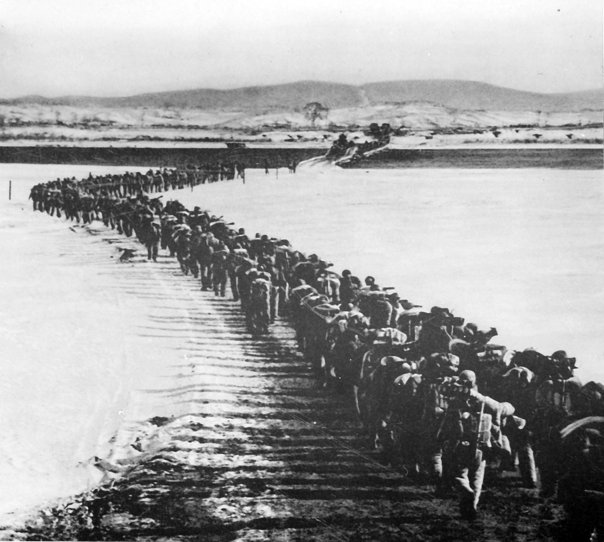
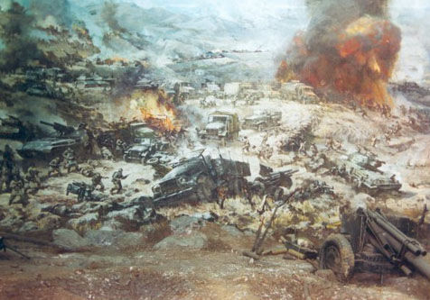
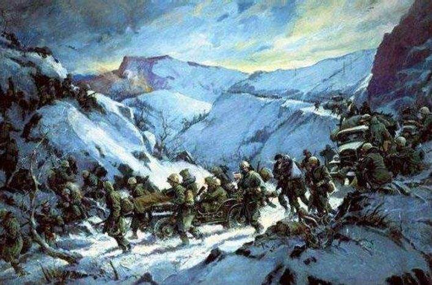
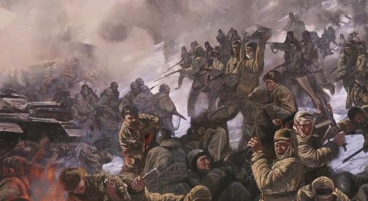
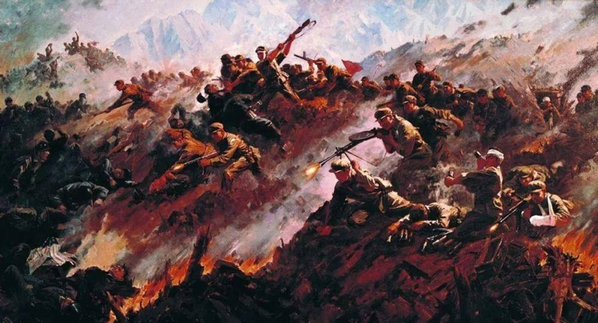
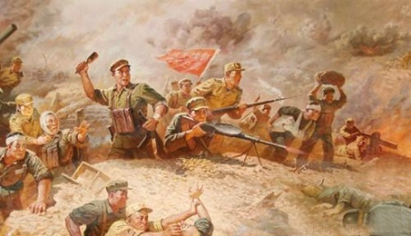
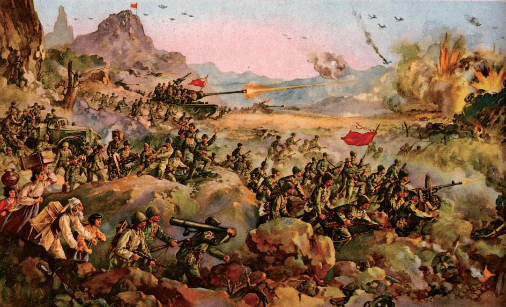

抗美援朝
保家卫国
他么是历史上、世界上第一流的战士，第一流的人！
他们是世界上一切善良爱好和平人民的优秀之花！是我们值得骄傲的祖国之花！
我们以我们的祖国有这样的英雄而骄傲，我们以生在这个英雄的国度而自豪
——魏巍《谁是最可爱的人》

他么是历史上、世界上第一流的战士，第一流的人！
他们是世界上一切善良爱好和平人民的优秀之花！是我们值得骄傲的祖国之花！
我们以我们的祖国有这样的英雄而骄傲，我们以生在这个英雄的国度而自豪
——魏巍《谁是最可爱的人》


1950年11月29日 志愿军38军郭忠田排 在敌人百余架次战机和数千颗炮弹的轮番轰炸下 巧妙地利 用地形构筑工事 采用放过坦克打步兵 设置假阵地迷惑敌人等战术 仅靠手中的轻武器 顽强地阻击了向南 撤退的美军 歼敌215人 自己无一伤亡 战后 志愿军总部授予2排“郭忠田英雄排”称号并给郭忠田记特等功

中华人民共和国介入冲突以后不久 中国人民志愿军第9兵团 在朝鲜东北部之长津湖 包围联合国军 在严寒 条件下 经历了从1950年11月27日至12月6日共10天的残酷战斗 成功地将联合国军驱逐出朝鲜东北地区 有力 地挫败了美帝国主义的嚣张气焰 但由于志愿军的后勤不足 无制空权等特点 遭受了巨大的战时伤亡

1950年11月30日 第38军337团3连抢占松骨峰 与美军激战两昼夜 在铺天盖地的燃烧弹攻击下死 守阵地 打退美军多次进攻 最后阵地上只剩下七个活着的中国士兵 但松骨峰还在志愿军手里 此役 38 军歼敌1.1万余人 缴获坦克14辆 一举扭转了整个朝鲜战局

1952年10月14日开始的上甘岭战役 持续鏖战43天 美军对志愿军阵地倾泻炮弹190余万发 炸弹 5000余枚 战况激烈前所罕见 志愿军战士利用坑道隐蔽自己 克服重重困难 顽强战斗 反复争夺阵地 达59次 志愿军击退敌人900多次冲锋 最终迫使联合国军停止进攻

1951年5月21日，彭德怀果断命令投入五次战役的志愿军各部全线后撤。就在彭德怀下令撤军的同时， “联合国军”总司令李奇微则指挥他部队开始了全面反攻。李奇微的目的只有一个，就是要将我军主力全歼 在三八线以南。此时彭德怀盯着地图，李奇微也在盯着地图，两人的目光，不约而同地停留在了同一个地方：铁原。

金城战役是抗美援朝战争的最后一次战役 也是抗美援朝战争中 志愿军唯一一次向坚固阵地之敌 发起的进攻战役 此次战役 志愿军火炮和炮火的密度达到了抗美援朝战争的最高水平 甚至超过了敌军的火力 整个战役消耗弹药1.9万吨 相当于志愿军前五次战役消耗弹药总和的2.2倍 此战毙伤俘敌7.8万余人 有力的促进了朝鲜停战的实现